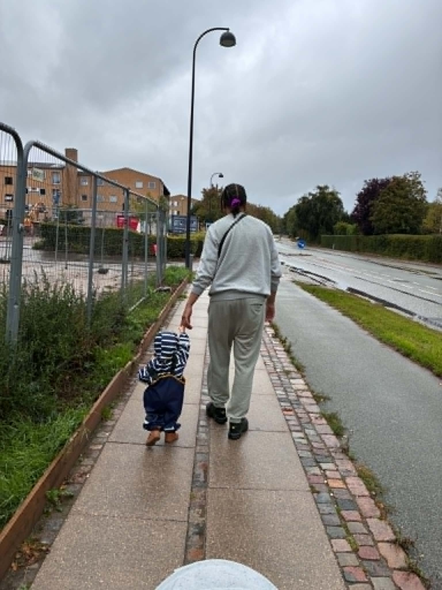
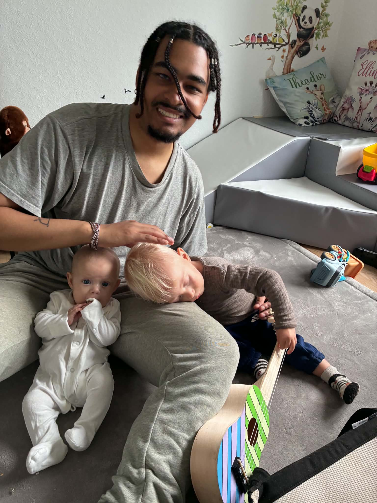

An IT Architect Student at EK
I am Jacob Jannick Larsen, and I study to become an IT Architect at Erhvervsakademi København.
I expect to finish my studies by October 2029.
About me
My name is Jacob Jannick Larsen, and I was born on 30 March 2000 to a Danish father and a Ugandan mother.
I grew up in Valby, Copenhagen, where technology became part of my life from a very early age.
I began using computers when I was around two years old,
and that early exposure developed into a lasting interest in technology, computers, and eventually development.

worked as an advisor in the Senior Technical Department at Webhelp Nordic Copenhagen.
The position gave me professional experience with technical troubleshooting, customer communication, and solving problems in a structured environment.

In 2022, I began studying for a bachelor's degree in Biochemistry at the University of Copenhagen.
After completing my first year, however, I decided to put my studies on hold. While I found biochemistry interesting, I was uncertain whether it was the field in which I wanted to build my future career.
During my break from university, I began working as a 1st Assistant in a retail store, where I was responsible for closing the store and handling the responsibilities that came with the role.
At the same time, stepping away from full-time studies gave me more freedom to pursue personal projects and reconsider the direction I wanted to take professionally.

It was during this period that I reignited my interest in development.
With guidance and help from programmer friends abroad, I began teaching myself more about development and putting that knowledge into practice.
One of the projects that came out of this was my own website featuring a room-building game, giving me practical experience with turning an idea into an interactive project.
What started as a childhood fascination with computers had gradually developed into something much more serious.
Building my own projects made me realize how much I enjoy the combination of technology, creativity, problem-solving, and development, and it encouraged me to explore the field further.
My plans and dreams

After reigniting my interest in development and creating my room-building game website,
I realized that this was the direction I wanted to pursue.
I really enjoyed the combination of creativity, problem-solving, and technology, as well as the satisfaction of turning an idea into something functional that other people could interact with.
I wanted to learn more, expand my technical toolset, and develop the skills needed to create bigger and more ambitious projects.
Because of this, I applied for a bachelor's degree in IT Architecture at Erhvervsakademi København.

As of now, I am studying IT Architecture while continuing to work as a 1st Assistant, where I am responsible for closing the store alongside my studies.
My current goal is to complete my bachelor's degree and begin a career within the IT industry.
As I continue learning about the different areas of IT architecture and software development, I am particularly interested in eventually specializing in either cloud technologies or backend development.
My long-term dream is to continue improving as a developer, gain professional experience within the industry,
and work on systems and applications where I can combine my technical skills with the same creativity and problem-solving that originally reignited my passion for development.